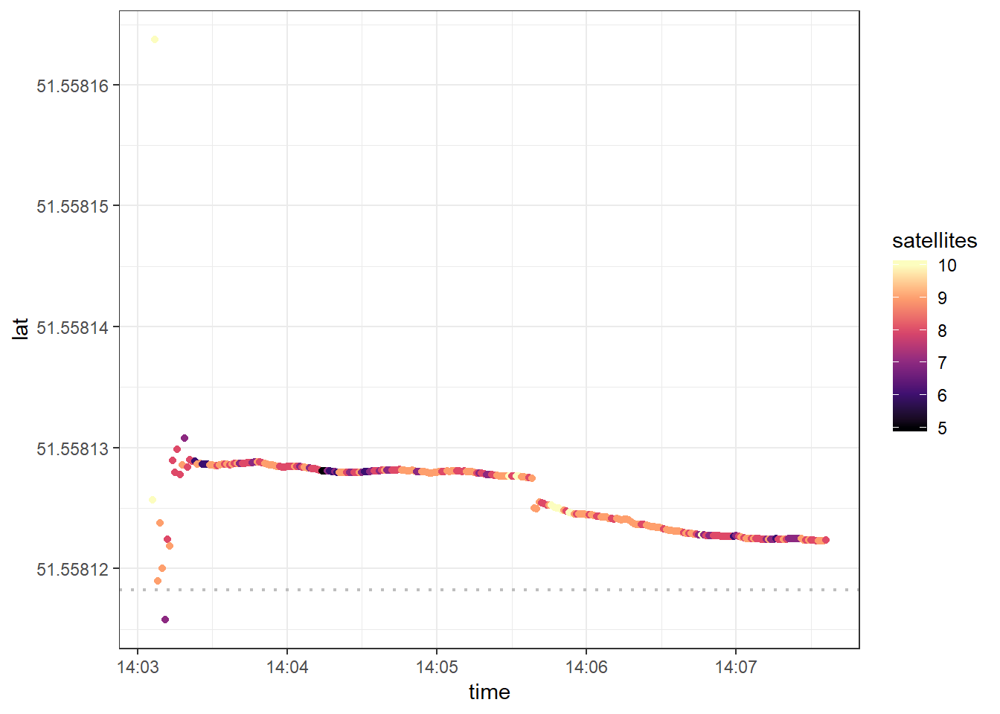
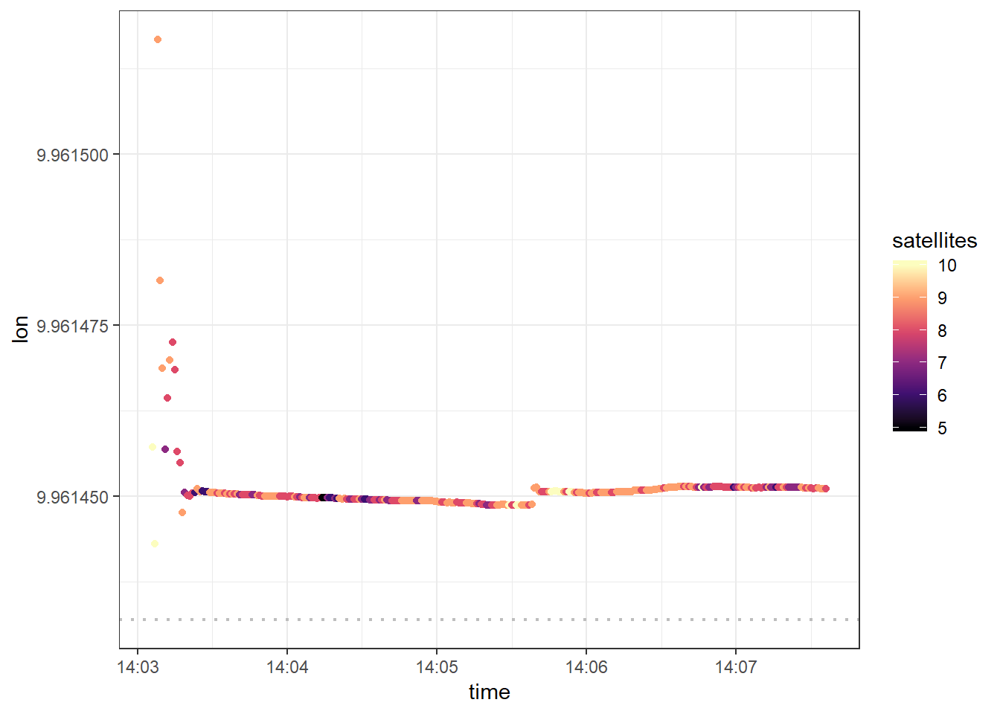
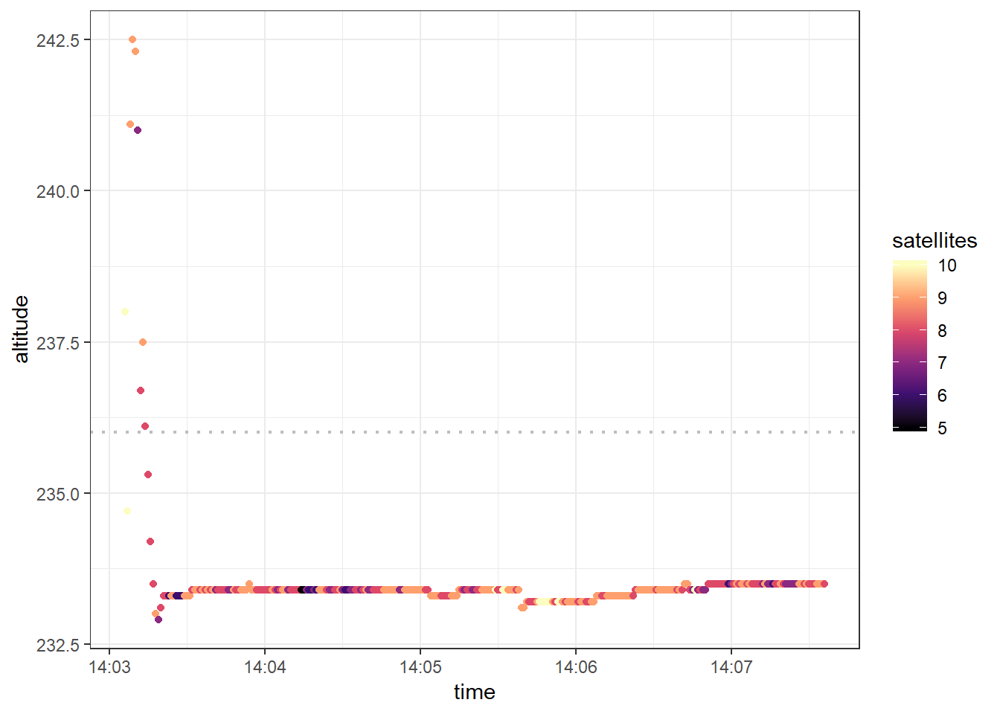
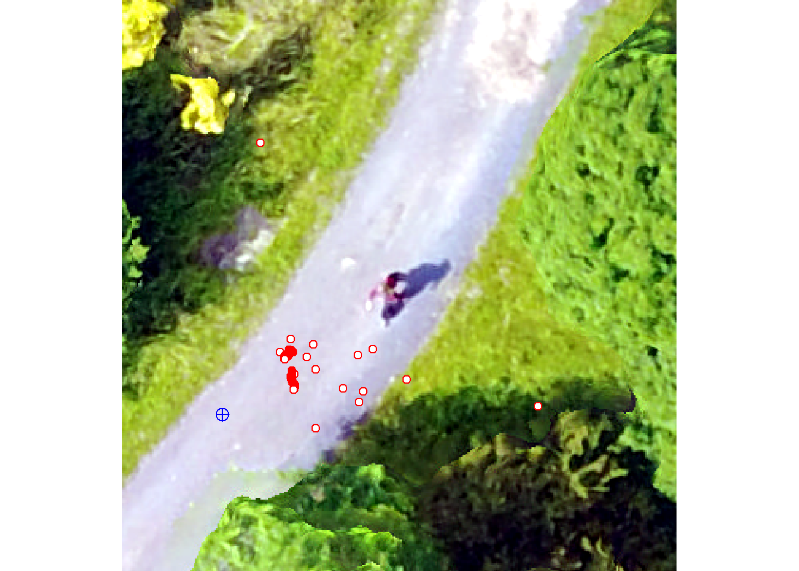
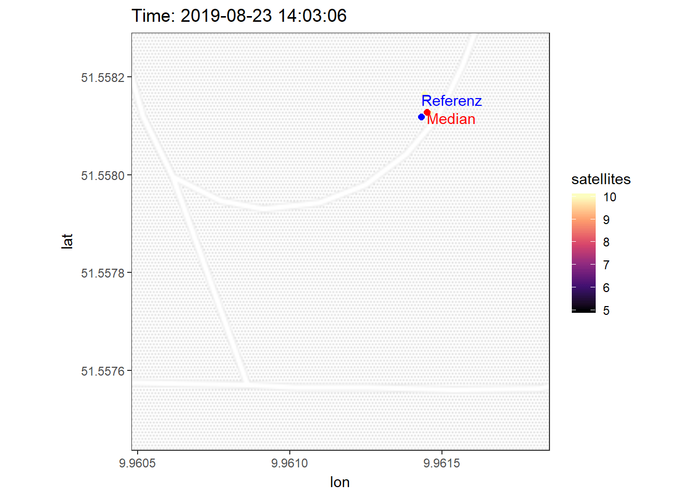
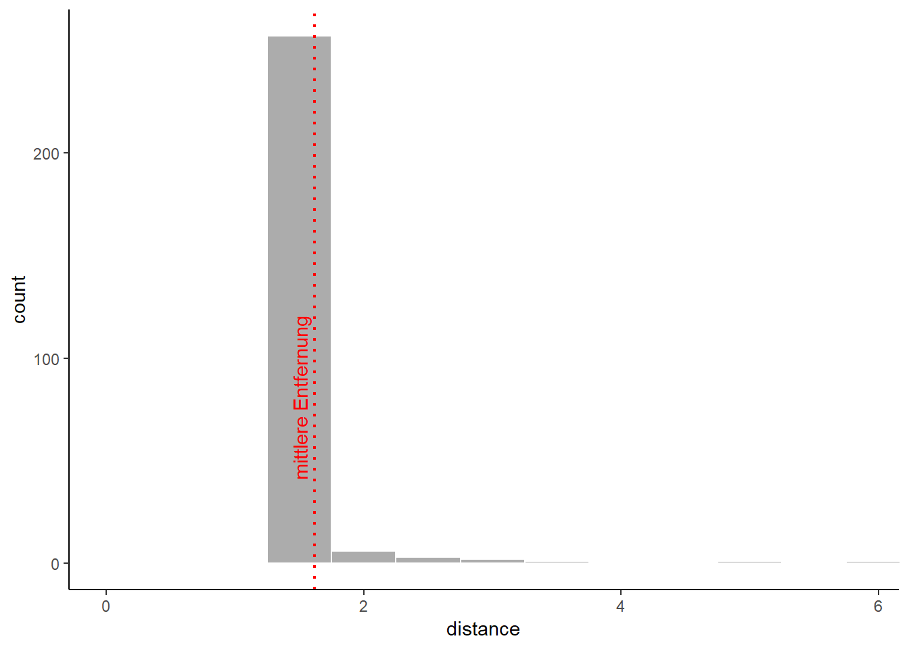

Einlesen der gemessenen Daten
# list all nmea files in directory
file_list <- list.files(path = here("raw_data/nmea"), pattern = "*.nmea", full.names = T)
# merge files in one dataframe
dataset <- do.call("rbind", lapply(file_list, function(x) {
dat <- read.table(x, header = FALSE, sep = ",", fill = TRUE, col.names = paste0("V",seq_len(26)))
# add variable filename
dat$filename <- tools::file_path_sans_ext(basename(x))
# add vaiable plot
dat$plot <- stringr::str_split(basename(x), stringr::fixed("_"))[[1]][1]
# add variable device
dat$device <- stringr::str_split(basename(x), stringr::fixed("_"))[[1]][2]
dat
}))Eingabe der Referenzdaten
# Soll-Koordinaten (WGS84 /UTM: 32N)
# reference.data <- data.frame(
# c("S02", 566695.383, 5712524.386, 291.667, 248),
# c("S01", 566659.820, 5712475.392, 287.097, 244),
# c("S06", 566668.336, 5712380.944, 283.004, 239),
# c("S08", 566747.805, 5712315.910, 284.097, 241),
# c("S09", 566650.005, 5712330.727, 278.666, 236),
# c("S10", 566597.088, 5712312.878, 274.012, 231),
# c("S11", 566579.563, 5712357.726, 274.214, 231),
# c("S12", 566559.544, 5712277.190, 269.066, 226),
# c("S03", 566736.672, 5712468.201, 299.619, 257),
# c("S04", 566726.730, 5712413.092, 291.878, 247),
# c("S05", 566775.776, 5712368.935, 289.469, 247),
# c("S07", 566708.123, 5712339.471, 282.419, 239))
# names(reference.data) <- c(1:12)
#
# reference.data <- as.data.frame(t(reference.data))
#
# names(reference.data) <- c("plot","ostwert","nordwert","hoehe_z", "hoehe")
#
# reference.data$ostwert = as.numeric(levels(reference.data$ostwert))[reference.data$ostwert]
# reference.data$nordwert = as.numeric(levels(reference.data$nordwert))[reference.data$nordwert]
# reference.data$hoehe_z = as.numeric(levels(reference.data$hoehe_z))[reference.data$hoehe_z]
# reference.data$hoehe = as.numeric(levels(reference.data$hoehe))[reference.data$hoehe]
#
# write.csv(reference.data,here("raw_data\\reference_data.csv"), row.names = FALSE)
# read data
reference.data <- read.csv(file = here("raw_data/reference_data.csv"))Auswahl der Untersuchungsdaten
plotnumber = "S09"
devicetype = "SamsungGalaxyTabA"
reference <- reference.data %>% filter(plot == plotnumber)
dat <- dataset %>% filter(plot == plotnumber,
device == devicetype)Reprojektion der Referenzdaten
# project data from UTM easting northing to latlon
ref.utm <- SpatialPointsDataFrame(coords = data.frame(reference$ostwert, reference$nordwert),
proj4string = CRS("+proj=utm +zone=32 +datum=WGS84"),
data = data.frame(reference$hoehe_z, reference$hoehe))
reference <- spTransform(ref.utm, CRS("+proj=longlat +datum=WGS84"))Auswahl des GPGGA Signals
#filter for GGA - essential fix data which provide 3D location and accuracy data.
GPGGA <- dat %>%
filter(V1 == "$GPGGA")
#remove empty columns
GPGGA <- Filter(function(x) !(all(x=="")), GPGGA)Vorprozessierung der gemessenen Daten
# rename columns based on meaning (from http://www.gpsinformation.org/dale/nmea.htm#GGA)
names(GPGGA) = c("datatype",
"time",
"lat",
"lat_direction",
"lon",
"lon_direction",
"quality",
"satellites",
"HDOP",
"altitude",
"altitude_unit",
"h_geoid",
"h_geoid_unit",
"checksum",
"filename",
"plot",
"device")
# reformat data
GPGGA$datatype = as.factor(GPGGA$datatype)
GPGGA$time = as.POSIXct(as.character(GPGGA$time), tz = "CET", format = "%H%M%S")
GPGGA$lat = as.numeric(levels(GPGGA$lat))[GPGGA$lat]
GPGGA$lat_direction = as.factor(GPGGA$lat_direction)
GPGGA$lon = as.numeric(levels(GPGGA$lon))[GPGGA$lon]
GPGGA$lon_direction = as.factor(GPGGA$lon_direction)
GPGGA$quality = as.factor(GPGGA$quality)
GPGGA$satellites = as.numeric(levels(GPGGA$satellites))[GPGGA$satellites]
GPGGA$HDOP = ifelse(is.numeric(GPGGA$HDOP), GPGGA$HDOP, as.numeric(levels(GPGGA$HDOP))[GPGGA$HDOP])
GPGGA$altitude = as.numeric(levels(GPGGA$altitude))[GPGGA$altitude]
GPGGA$altitude_unit = as.factor(GPGGA$altitude_unit)
GPGGA$h_geoid = as.numeric(levels(GPGGA$HDOP))[GPGGA$h_geoid]
GPGGA$h_geoid_unit = as.factor(GPGGA$h_geoid_unit)
GPGGA$checksum = as.factor(GPGGA$checksum)
# convert gnss lat/lon from DDMM.MMMMM to DD.DDDDDD (decimal degrees)
convertISO6709 <- function( DDMM.MMMMM) {
# It's simpler to do the arithmetic on positive numbers, we'll add the signs
# back in at the end.
sgns <- sign(DDMM.MMMMM)
latlon <- abs(DDMM.MMMMM)
# grab the MM.MMMM bit, which is always <100. '%%' is modular arithmetic.
mm <- latlon %% 100
# grab the DD bit. Divide by 100 because of the MM.MMMM bit.
dd <- (latlon - mm)/100
# convert to decimal degrees, don't forget to add the signs back!
out_latlon <- (dd+mm/60) * sgns
return(out_latlon)
}
GPGGA[,"lat"]<- convertISO6709(GPGGA[,"lat"])
GPGGA[,"lon"] <- convertISO6709(GPGGA[,"lon"])
m <- GPGGA %>%
filter(quality != 0) %>%
arrange(time) %>%
slice(-1:-4)Berechnung von Kennwerten
ref_h = reference@data$reference.hoehe
ref_N = reference@coords[2]
ref_E = reference@coords[1]
# Abweichung Nord: dev_N = N - ref_N
dev_N = m$lat - ref_N
# Abweichung Ost: dev_E = E - ref_E
dev_E = m$lon - ref_E
# Abweichung H?he: dev_h = h - ref_h
dev_h = m$altitude - ref_h
# Abweichung Horizonttal Referenz : dev_hori_ref = sqrt(dev_E^2 + dev_N^2)
dev_hori_ref = sqrt(dev_E^2 + dev_N^2)
# Mittelwert Nord: mean_N = mean(N)
mean_N = mean(m$lat)
# Mittelwert Ost: mean_E = mean(E)
mean_E = mean(m$lon)
# Mittelwert H?he: mean_h = mean(h)
mean_h = mean(m$altitude)
# Abweichung Horizonttal Mittel : dev_hori_mean = sqrt((E - mean_E)^2 + (N - mean_N)^2)
dev_hori_mean = sqrt((m$lon - mean_E)^2 + (m$lat - mean_N)^2)
# Systematische Nordabweichung: dev_sys_N = mean_N - ref_N
dev_sys_N = mean_N - ref_N
# Systematische Nordabweichung meter
dev_sys_N_meter = mean(distm (x = data.frame(ref_E, m$lat), y = c(ref_E, ref_N), fun = distHaversine))
# Systematische Ostabweichung: dev_sys_E = mean_E - ref_E
dev_sys_E = mean_E - ref_E
# Systematische Ostabweichung meter
dev_sys_E_meter = mean(distm (x = data.frame(m$lon, ref_N), y = c(ref_E, ref_N), fun = distHaversine))
# Systematische H?henabweichung: dev_sys_h = mean_h - ref_h
dev_sys_h = mean_h - ref_h
# Systematische Horizontalabweichung: dev_sys_hori = sqrt(dev_sys_E^2 + dev_sys_N^2)
dev_sys_hori = sqrt(dev_sys_E^2 + dev_sys_N^2)
# Circular Error Probability (CEP) The radius of circle centered at the true position, containing the position estimate with probability of 50%.
cep = 0.62*sd(m$lat)+0.56*sd(m$lon)
#calculate distance for each measurement to according reference location
m[ ,"distance"] <- distm (x = data.frame(m$lon, m$lat),
y = c(ref_E, ref_N),
fun = distHaversine)
# distance between median value and reference value
ref_to_median = distm (x = data.frame(median(m$lon), median(m$lat)),
y = c(ref_E, ref_N),
fun = distHaversine)Auszug der Datentabelle des NMEA Signals. Gefiltert nach GPS fix Daten zur Positionsbestimmung ($GPGGA).
dt <- m %>% select(-lon_direction,-lat_direction,-distance, -filename, -plot, -device) %>% filter(quality != 0)
names(dt)[1] <- paste0(names(dt)[1],
footnote_marker_symbol(1))
tail(dt) %>%
kable(escape = F) %>%
kable_styling(bootstrap_options = c("striped", "hover", "condensed", "responsive"), font_size = 12, fixed_thead = T) %>%
footnote(symbol = "filtered for GPS Fix Data (GPGGA)" )| datatype* | time | lat | lon | quality | satellites | HDOP | altitude | altitude_unit | h_geoid | h_geoid_unit | checksum | |
|---|---|---|---|---|---|---|---|---|---|---|---|---|
| 266 | $GPGGA | 2019-08-23 14:07:31 | 51.55812 | 9.961451 | 1 | 8 | NA | 233.5 | M | NA | M | *5B |
| 267 | $GPGGA | 2019-08-23 14:07:32 | 51.55812 | 9.961451 | 1 | 8 | NA | 233.5 | M | NA | M | *59 |
| 268 | $GPGGA | 2019-08-23 14:07:33 | 51.55812 | 9.961451 | 1 | 9 | NA | 233.5 | M | NA | M | *57 |
| 269 | $GPGGA | 2019-08-23 14:07:34 | 51.55812 | 9.961451 | 1 | 9 | NA | 233.5 | M | NA | M | *57 |
| 270 | $GPGGA | 2019-08-23 14:07:35 | 51.55812 | 9.961451 | 1 | 9 | NA | 233.5 | M | NA | M | *59 |
| 271 | $GPGGA | 2019-08-23 14:07:36 | 51.55812 | 9.961451 | 1 | 8 | NA | 233.5 | M | NA | M | *5B |
| * filtered for GPS Fix Data (GPGGA) |
m %>%
ggplot()+
geom_point(aes(x=time, y=lat, color= satellites)) +
scale_colour_viridis_c(option="magma") +
geom_hline(yintercept = ref_N, linetype="dotted",
color = "grey", size= 0.8) +
theme_bw()
Systematische Nordabweichung: 0.0000078 Grad
Die mittlere Abweichung des Breitengrads betraegt 0.87 m
m %>%
ggplot()+
geom_point(aes(x=time, y=lon, color= satellites)) +
scale_colour_viridis_c(option="magma") +
geom_hline(yintercept = ref_E, linetype="dotted",
color = "grey", size= 0.8) +
theme_bw()
Systematische Ostabweichung: 0.000019
Die mittlere Abweichung des Laengengrads betraegt 1.3 m
m %>%
ggplot()+
geom_point(aes(x=time, y=altitude, color= satellites)) +
scale_colour_viridis_c(option="magma") +
geom_hline(yintercept = ref_h, linetype="dotted",
color = "grey", size= 0.8) +
theme_bw()
Die systematische Hoehenabweichung betraegt -2.4 m
Messungen ueberlagert auf UAV-Orthophoto
#load uav
uav <- stack(here("raw_data/uav/orthomosaik.tif"))
sp<-SpatialPointsDataFrame(coords = data.frame(m$lon,m$lat), data=m, proj4string = CRS("+proj=longlat +datum=WGS84"))
sp.utm = spTransform(sp,crs(uav))
ext = extent(min(sp.utm@coords[,1])-(max(sp.utm@coords[,1])-min(sp.utm@coords[,1]))/2,max(sp.utm@coords[,1])+(max(sp.utm@coords[,1])-min(sp.utm@coords[,1]))/2,
min(sp.utm@coords[,2])-(max(sp.utm@coords[,2])-min(sp.utm@coords[,2]))/2,max(sp.utm@coords[,2])+(max(sp.utm@coords[,2])-min(sp.utm@coords[,2]))/2)
uavcrop <- crop(x= uav, y= ext)
plotRGB(uavcrop,
r = 1, g = 2, b = 3,
stretch = "lin")
plot(sp.utm, pch = 21, col="red", bg="white", add = TRUE)
plot(ref.utm, pch=10, col="blue", cex=1.5, add = TRUE)
Aus GPS Daten geloggte Positionen im Laufe der Messungen.
# bbox= c(left = median(m$lon)-(max(m$lon)-min(m$lon))/2,
# bottom = median(m$lat)-(max(m$lat)-min(m$lat))/2,
# right = median(m$lon)+(max(m$lon)-min(m$lon))/2,
# top = median(m$lat)+(max(m$lat)-min(m$lat))/2)
bbox= c(left = min(m$lon), bottom = min(m$lat), right = max(m$lon), top = max(m$lat))
map <- ggmap(get_stamenmap(bbox, zoom = 18, maptype = "toner-lite", crop=F))+
geom_point(data = m, aes(x = lon, y = lat, color=satellites), shape = 20, size= 3, alpha=1)+
geom_point(data = m, aes(x = median(m$lon), y = median(m$lat)), shape = 20, color="Red", size=3)+
annotate("text", x = median(m$lon), y = median(m$lat), hjust=0,vjust=1, label = "Median",color="Red") +
geom_point(x = ref_E, y = ref_N, shape = 20, color="Blue", size=3)+
annotate("text", x = ref_E, y = ref_N, hjust=0,vjust=-1, label = "Referenz",color="Blue") +
scale_colour_viridis_c(option="magma")+
theme_bw()
map +
transition_time(m$time) +
labs(title = "Time: {frame_time}") +
shadow_mark(alpha = 0.3, size = 2)
#plot distance from reference location as histogram
p <- ggplot(m, aes(distance)) +
geom_histogram(binwidth=0.5, alpha=.5, color="white")+
# geom_density()+
coord_cartesian(xlim = c(0, max(m$distance))) +
geom_vline(xintercept = mean(m$distance), linetype="dotted",
color = "red", size= 0.8) +
annotate("text", x = mean(m$distance), y = 0, hjust= -0.5, vjust =-0.5, angle = 90, label = "mittlere Entfernung",color="Red") +
theme_classic()
p
Systematische Horizontalabweichung: 0.000021 Grad
Im Mittel betraegt die Entfernung der Messungen zum Referenzpunkt 1.6 m
Die Abweichung zwischen Referenzpunkt und dem Median der Messung betraegt 1.7 m
A work by Jens Wiesehahn